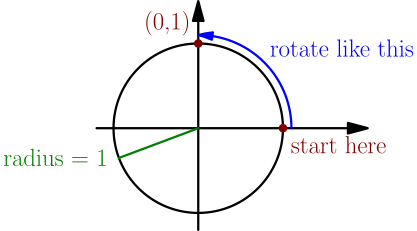
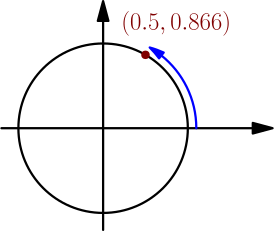
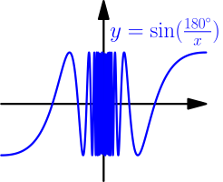

"Definition" of limit by plugging in numbers¶
On this page, the word "function" means a function that takes in a real number as its only argument, and evaluates to another real number. Some real numbers might not be valid inputs of the function; for example, square root is a function that accepts only nonnegative inputs.
Limit is a very important concept in calculus. Basically, all calculus is based on limits. The definition of derivative contains a limit. The definition of integral doesn't directly use limits, but integrals are almost always calculated using derivatives.
There are two common ways to introduce limits: teaching students to calculate limits without talking much about why they work like they do (high schools), and proving all the properties of limits needed very carefully with somewhat difficult proofs (university).
The "university" approach is not easy, so we start with the "high school" approach, and then move on to a definition that resembles the "university" approach a lot but is hopefully easier. On this page, we explore the "high school" approach and discuss its advantages and limitations.
Let's get started by plugging some numbers into the function $$ f(x) = \frac{x^3-1}{x-1}. $$ We notice that $f(1)$ is undefined, because that gives division by zero. However, if we plug in some values that are just a little bit greater than $1$, we get this:
| $x$ | $f(x)$ |
|---|---|
| $1$ | undefined |
| $1.1$ | $3.31000\dots$ |
| $1.01$ | $3.03010\dots$ |
| $1.001$ | $3.00300\dots$ |
| $1.0001$ | $3.00030\dots$ |
| $1.00001$ | $3.00003\dots$ |
The values of $f$ seem to be quite close to $3$.
We notice a similar thing if we plug in values that are just a little bit less than $1$:
| $x$ | $f(x)$ |
|---|---|
| $0.9$ | $2.71000\dots$ |
| $0.99$ | $2.97010\dots$ |
| $0.999$ | $2.99700\dots$ |
| $0.9999$ | $2.99970\dots$ |
| $0.99999$ | $2.99997\dots$ |
In this situation, we say that the limit of $f(x)$ as $x \to 1$ (read: $x$ approaches $1$, $x$ goes to $1$) is $3$, and we write $$ \lim_{x \to 1} f(x) = 3. $$ This lim notation is somewhat tall, so if it's somewhere in the middle of text, it's often written with the $x \to 1$ part off to the side, like $\lim_{x \to 1} f(x)$.
To write a limit, you don't need to give a name to the function ($f$ in this case): you can also write $$ \lim_{x \to 1} \frac{x^3-1}{x-1} = 3. $$ Here the purpose of naming the function $f(x)$ was to avoid having to write $\frac{x^3-1}{x-1}$ many times.
Simple examples¶
We have the following limit: $$ \lim_{x \to 3} x = 3 $$ This means that if we take values of $x$ that are close to $3$ ($x \to 3$), and we do nothing to them, we get numbers that are close to $3$.
Here is an even simpler example: $$ \lim_{x \to 3} 5 = 5 $$ This means that if we first take values of $x$ that are close to $3$, and then throw them away and instead always take the number $5$, then the resulting number $5$ is close to $5$. Any number is considered to be close to itself.
Of course, these also work with any other numbers instead of 3 and 5.
Surprising example¶
Let $$ f(x) = \sin\left( \frac{180^\circ}{x} \right). $$ Most calculators have a $\sin(\dots)$ function, but I will explain what it does in case you're not familiar with it. To calculate $f(x)$, you take a 180 degree angle, divide it by $x$, and then rotate by the resulting angle along the unit circle (radius 1) counter-clockwise, starting from the right. Then $f(x)$ is the $y$ coordinate of the point where you end up. The $x$ coordniate is ignored.
For example, $f(2) = 1$, because we rotate by $\frac{180}{2}=90$ degrees and land at the point $(0,1)$, which has $y$ coordinate $1$.

Similarly, to calculate $f(3)$ we rotate by $\frac{180}{3}=60$ degrees and land in a point where the $y$ coordinate is about 0.866, so $f(3) \approx 0.866$:

Let's try to calculate $$ \lim_{x \to 0} f(x). $$ This means that we plug in numbers close to zero. Like this:
| $x$ | $f(x)$ |
|---|---|
| $0.1$ | $0$ |
| $0.01$ | $0$ |
| $0.001$ | $0$ |
| $0.0001$ | $0$ |
| $0.00001$ | $0$ |
The function is outputting zero, so it seems that the limit is zero. Let's also try negative numbers:
| $x$ | $f(x)$ |
|---|---|
| $-0.1$ | $0$ |
| $-0.01$ | $0$ |
| $-0.001$ | $0$ |
| $-0.0001$ | $0$ |
| $-0.00001$ | $0$ |
We still get zero, so it is tempting to conclude that the limit is zero, but actually, the limit is not zero. To see why, consider the following (carefully chosen) sequence of small numbers. (To get the next $x$, I divided the previous $x$ by 5.) It causes the function to always output the value $1$:
| $x$ | $f(x)$ |
|---|---|
| $2$ | $1$ |
| $0.4$ | $1$ |
| $0.08$ | $1$ |
| $0.016$ | $1$ |
| $0.0032$ | $1$ |
| $0.00064$ | $1$ |
| $0.000128$ | $1$ |
Now it seems like the limit should be 1.
The behavior of this function seems confusing. To get a better idea of it, let's draw a graph of it:

The function oscillates between $\pm 1$ infinitely many times near zero. This happens because $\frac{180^\circ}{x}$ is very large for small values of $x$. For example, $$ \frac{180}{0.0001} = 1800000 = 5000 \cdot 360. $$ This means 5000 full turns around the circle. As we make $x$ even smaller, we spin around the circle infinitely many times, and that's the bouncing you see in the graph.
In this situation, we say that the limit doesn't exist or is undefined.
A limit might not exist.
Problems¶
So far we have calculated limits by plugging in nearby numbers. While this works, this method also has downsides:
- In complicated cases, you might not notice some behavior of the function. See the above example.
- There's no good way to plug in nearby numbers if the limit contains unknown variables, e.g. $\lim_{x \to a} (bx+c)$. Solving unknown things later is a very powerful technique in math, so it's important that it works.
- It's hard to prove anything about limits this way. "Just plug in nearby numbers" is not a good definition, so if you try to prove something with it, the "proof" won't be convincing.
To fix these problems, next we define limits precisely.